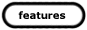

|
SITEMAP |
||
| Features:Articles, interviews, and
other material written by the scenelink staff, and updated once a month.
|
 | |
| Releases: Announcements of new game, util, and
emag releases submitted by the release groups.
|
||
| Index: An index of groups and emags in the art,
warez, and mp3 scenes. Updated monthly by the groups themselves.
|
||
| Gallery: A selection of images from current art
packs. Divided in the rotating gallery with a mix of all scenes and the
individual galleries for each scene.
|
||
| About: All about scenelink. |
||
| News: The front page of the site. This page has up to the minute info submitted by people from across the scenes. |